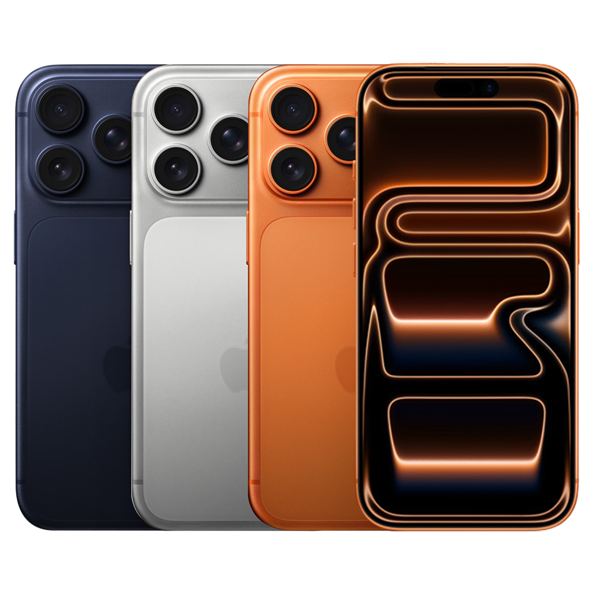
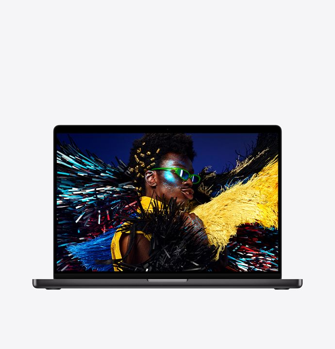
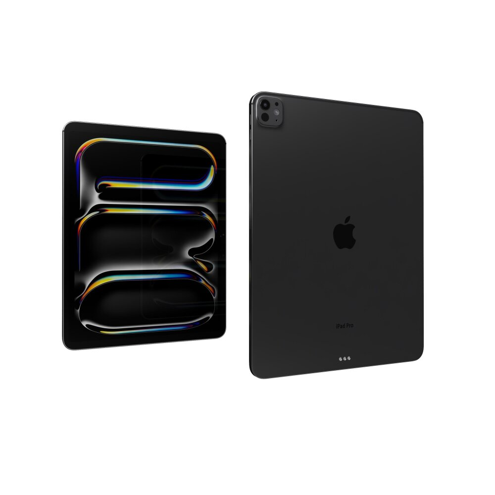
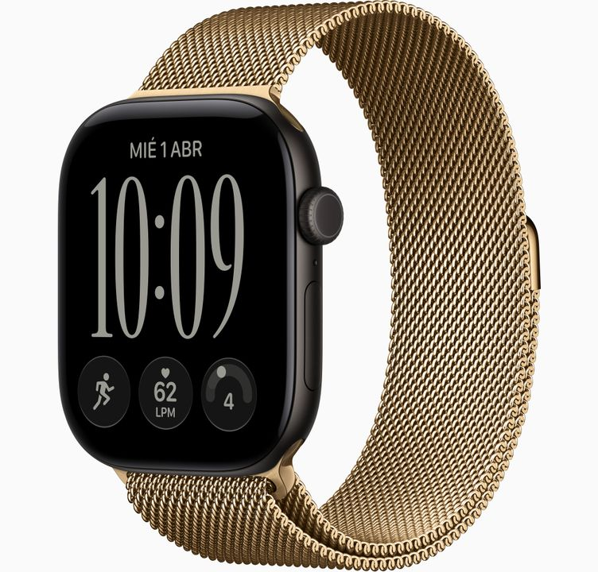

| Ilustración | Modelo | Descripción |
|---|---|---|
|
 |
iPhone 17 Pro Max |
Teléfono inteligente de gama alta enfocado en el máximo rendimiento, con un sistema de
cámaras
Pro avanzado, pantalla Super Retina XDR de gran formato y diseño resistente. |
|
 |
MacBook Pro de 16" (con chip M5 Max) |
Laptop profesional con pantalla de 16 pulgadas y el procesador M5 Max,diseñada para flujos
de trabajo altamente exigentes como renderizado 3D, edición de video de alta resolución y desarrollo de software. |
|
 |
iPad Pro de 13" (con chip M5) |
Tableta de alta gama con pantalla Ultra Retina XDR de 13 pulgadas y chip M5, orientada a creadores de contenido, ilustración digital y multitarea profesional. |
|
 |
Apple Watch Series 12 |
Reloj inteligente diseñado para el monitoreo continuo de la salud, seguimiento de entrenamiento físico, sensores de seguridad y gestión de notificaciones. |